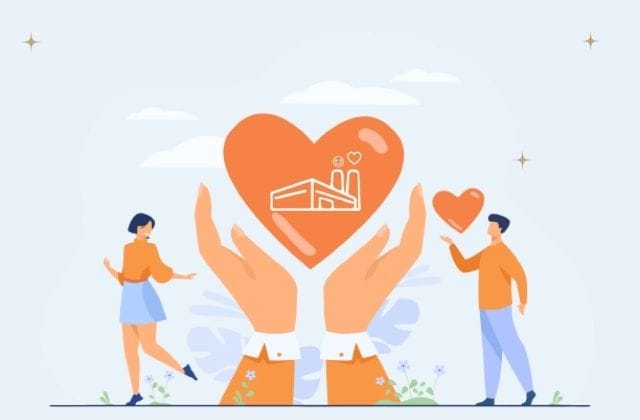

Fábrica de Felicidade - 2022
Missão, Visão e Valores da Fábrica de Felicidade
Por Shin em
Os princípios internos da Fábrica de Felcidade
O modo de trabalho da Fábrica de Felicidade segue 5 itens na sua filosofia. Esta é a nossa razão, nosso caminho, a filosofia interna da Fábrica de Felicidade no modo de ser. Neste caso, Filosofia pode se entender como Princípios.
Felicidade para conquistar
Apesar do know-how técnico e vivência no mundo corporativo, a Fábrica de Felicidade almeja a conquista de soluções e melhoria de resultados exclusivamente através da felicidade. Até mesmo nosso fundador Shin, muito requisitado pelas empresas pela sua vasta carreira, seguindo nossos princípios, foca prioritariamente na felicidade para atingir os resultados.
Entender que EMPRESAS são PESSOAS
Para qualquer situação em que for contratada a Fábrica de Felicidade, o entendimento de que a nossa missão não é levar felicidade àquela empresa, mas sim, fazer as pessoas daquela empresa mais felizes.
Este é um conceito que toda empresa deveria ter consciência. Os maiores e mais valiosos recursos de toda e qualquer empresa são as pessoas que a constituem. Então, para melhorar resultados, melhore as suas pessoas.
SEMPRE doar 10% do valor arrecadado para algo/alguém que precise
A Fábrica de Felicidade reconhece o papel social que as empresas têm no mundo.
Seguindo o princípio da gratidão e luta por igualdade social, quando obtemos qualquer quantia que vem da parte mais alta da pirâmide de recursos, 10% nós doamos para a parte mais necessitada da sociedade. Na nossa primeira experiência doamos 30 feijoadas.
E é essa a equação simples, independentemente do valor, a porcentagem de 10% é fixa a ser doada.
O cliente sempre escolhe nosso preço
Também lutando por uma sociedade mais justa e igualitária, a Fábrica de Felicidade tem como princípio o cliente sempre escolher quanto pagará pelo serviço.
Somos a empresa pioneira a prestar serviço nesta modalidade. Existem duas principais razões:
1. Prestar um serviço onde não afetará significativamente a saúde financeira da empresa
2. Estimular a gratidão também no contratante.
Luta pela gratidão
A gratidão é um dos pilares da felicidade. Então o cliente só paga a Fábrica de Felicidade após receber o serviço e este decidirá o quanto valeu a pena para a sua empresa.
O sentimento de gratidão atualmente é uma bobagem nas empresas e o papel da Fábrica de Felicidade é mudar este contexto. A missão é quase impossível, mas estamos dispostos a quebrar este paradigma.
Conclusão
Todos estes princípios fazem a Fábrica de Felicidade ser confundida com uma ONG, um projeto mantido por alguma instituição ou algum tipo de golpe envolvido.
Na verdade, tudo começou com uma pessoa que acreditou na mudança para um mundo melhor, modificando a engrenagem perversa das empresas que obtém sucesso em troca de vidas, silenciosamente destruindo a felicidade.
Gratidão pela leitura e um forte abraço. 😉